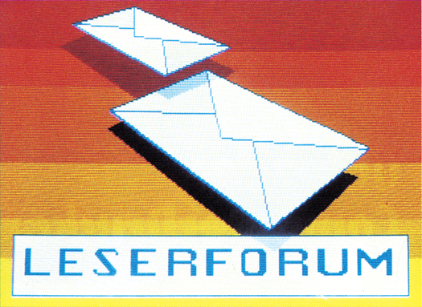

Leserforum

FRAGEN ZUM C 64
(1) An der Rückseite meines C 64 befindet sich zwischen Expansion-Port und Fernsehausgang ein Regler mit der Bezeichnung »H-L« auf dem Gehäuse. Welche Bedeutung hat dieser Regler?
(2) Ich habe mich schon länger mit dem Commodore Basic V2 befaßt und möchte nun ein wenig in Maschinensprache/Assembler einsteigen. Könnten Sie mir Einsteigerliteratur dazu empfehlen?
(3) Kann man ein durch die fehlerhafte »Klammeraffen-Routine« der Floppy 1541 zerstörtes Programm wieder auf der Floppy restaurieren?
(4) Eine letzte Frage: Wer hat Erfahrungen mit dem Okimate 20-Drucker?
MARCO TRUNZER
(1) Dieser Regler ist nur bei wenigen C 64 noch vorhanden. Es handelt sich dabei um einen Kanal-Wahlschalter, mit dem der Fernsehkanal, auf dem der C 64 »sendet«, verändert werden kann. In Deutschland ist dieser Schalter, wenn überhaupt vorhanden, aus postalischen Gründen stillgelegt und abgedeckt.
(2) Wirklich ruhigen Gewissens können wir an dieser Stelle etwas Eigenwerbung betreiben: Das 64’er-Sonderheft 8/85 mit dem Titel »Assembler für Anfänger und Fortgeschrittene« ist der ideale Einstieg in die Maschinensprache-Programmierung.
Es enthält unter anderem einen 70seitigen Assemblerkurs für den Einsteiger, einen zweiten 30seitigen Kurs für Fortgeschrittene und jede Menge kleiner Utilities und Tips & Tricks zur Assemblerprogrammierung. Der besondere Clou an diesem Sonderheft: Es enthält zusätzlich einen Makro-Assembler der Spitzenklasse (Hypra-Ass) und einen sehr komfortablen Maschinensprache-Monitor (Smon) — beide zum Abtippen, aber auch auf Diskette/Kassette erhältlich.
HILFE GESUCHT
(1) Gibt es eine Möglichkeit, mittels Vizawrite erstellte Texte an einen Siemens-Fernschreiber (5-Bit-Lochstreifen) weiterzuleiten? Wie müßte eine Hardware-Lösung aussehen und wer bietet entsprechende Hardware an?
(2) Kann man ohne Anschaffung von teuren und für Sender/Empfänger ausgelegten RW/CTTY-Karten Morse- und Funkfernschreibsignale aus einem normalen Radio so umwandeln, daß sie vom C 64 verarbeitet, daß heißt, entschlüsselt und zur Anzeige auf Bildschirm oder Drucker gebracht werden können?
(3) Gibt es ein Programm, mit dem Flußdiagramme grafisch erstellt und anschließend auf Ihren logischen Aufbau hin überprüft werden?
(4) Die Software-80-Zeichen-Karten sind ohne Ausnahme unbefriedigende Lösungen. Gibt es ein Programm, das eine Darstellung von 64 Zeichen pro Zeile (also 5 Pixel pro Buchstabe) erlaubt und so eine bessere Lesbarkeit erzielt?
DIPL.-KFM. PETER GELSDORF
PROBLEME MIT EPSON UND C128?
Ich besitze seit kurzer Zeit den neuen C 128 von Commodore und gehöre zu den sogenannten »Aufsteigern« vom C 64. Nun habe ich folgendes Problem: Beim Betrieb mit dem Drucker Epson FX-80 mit Görlitz-Interface stimmen teilweise die ausgedruckten Zeichen nicht mit den gesendeten überein.
Wer hat ähnliche Probleme und kann mit weiterhelfen? Im Fachhandel ist man zu keinerlei Auskünften bereit.
REINHARD ANDREAS SCHULZ
FRAGEN ZUM C 128
(1) Gibt es für den C128 ein Malprogramm, bei dem man die gezeichneten Bilder über »BLOAD« laden und in eigenen Programmen verwenden kann?
(2) Kann man beim C 128 mehrere Windows definieren, oder wird bei Definition eines weiteren Windows das alte gelöscht?
(3) Wie hebt man eine Window-Definition wieder auf?
(4) Kann man in Basic (ohne POKEs) Sprites um bestimmte Winkel drehen?
(5) Kann man Sprites um beliebig viele Punkte vergrößern oder verkleinern?
(6) Wenn ein Sprite mit der PAINT-Anweisung ausgefüllt und anschließend bewegt wird, bleibt das Sprite dann ausgefüllt oder bleibt die ausgefüllte Fläche am gleichen Ort zurück?
(7) Im Markt&Technik-Buch »Das C128 Handbuch« ist ein Listing für Grafik auf dem 80-Zeichen-Bildschirm abgedruckt. Ich weiß aber nicht die Adressen dieses Programms und kann es daher auch nicht mit »BSAVE« speichern.
(8) Wie kommt man (in Basic) an den zweiten Schreib-/Lesekopf der 1571-Floppy?
THOMAS WEBERSTAEDT
(1) Ein spezielles Malprogramm für den C 128-Modus ist uns bislang noch nicht bekannt. Sie können aber einfach ein entsprechendes Programm für den C 64 (im C 64-Modus) benutzen, um Ihre Bilder zu malen. Diese Bilder lassen sich dann völlig problemlos auch im C 128-Modus laden (die Grafik ist in beiden Betriebsarten die gleiche). Nähere Hinweise dazu erhalten Sie entweder im Handbuch zum Grafikprogramm oder auf Anfrage beim Hersteller — gegen Vorlage eines Kaufnachweises.
(2) Nein. Sobald ein Window definiert wird, ist die vorherige Einstellung vergessen.
(3) Im Direktmodus durch zweimaligem Druck auf die HOME-Taste, im Programm am einfachsten durch Definition eines neuen Windows (das natürlich auch den gesamten Bildschirm umfassen kann).
(4) Das ist nicht möglich.
(5) Nur die bekannte Verdopplung der Sprite-Größe in X- und Y-Richtung ist möglich.
(6) Die PAINT-Anweisung bezieht sich nur auf die hochauflösende Grafik. Es ist damit nicht möglich, Sprites auszufüllen.
(7) Bei dem abgedruckten Listing handelt es sich um ein Assembler-Programm. Die (vierstellige) Zahl am Anfang jeder Zeile ist die (hexadezimale) Adresse jedes Befehls. Das Programm wird mit dem eingebauten Maschinensprache-Monitor des C 128 eingegeben und gespeichert. Die Anfangs- und Endadresse des Programms ist einfach die Adresse des ersten und des letzten Befehls, also von $1400 bis $157F.
(8) Der Zugriff auf die eine oder andere Diskettenseite wird vom DOS der 1571 ganz selbsttätig geregelt. Sie brauchen keine besonderen Vorkehrungen zu treffen, um einen Schreib-/Lesekopf auszuwählen.
VIELSTIMMIGER SID
Ist der C 64 über den Audioein-/ausgang auch als Effektgerät für E-Gitarren etc. nutzbar? Wie kann man den SID auch mehr als dreistimmig benutzen?
MARKUS GURNIG Ausgabe 12/85
Ja, man kann den C 64 auch als Effektgerät einsetzen, da der SID einen Eingang für externe Signale hat. Hierzu muß man im SID-Register $D417 (54295) Bit 3 setzen (externe Filtereingabe ein). Danach wird das extern angelegte Signal genau wie eine Synthesizerstimme beeinflußt, so daß man mittels eines Programms verschiedene Klangfarbenverläufe einstellen beziehungsweise programmieren kann. Hierzu empfehle ich das Buch Commodore Sachbuch Band 1, Seite 323 und 452, 453.
Zur zweiten Frage: Grundsätzlich ist der SID nur dreistimmig betreibbar; allerdings könnte man ihn hardwaremäßig über den externen Signaleingang mit einem zweiten SID verbinden (siehe auch Commodore Sachbuch Band 1, Seite 453.
DIETMAR HARMS
PEEKS UND POKES MIT COMAL?
Wie kann ich feststellen, ob die vielen für den C 64 veröffentlichten Tips & Tricks auch mit der Programmiersprache Comal 80 (Steckmodul) funktionieren? Gibt es andere Möglichkeiten als das Ausprobieren?
WOLFGANG DÖRR
Dieses Problem taucht generell bei Verwendung von Basic-Erweiterungen oder gar völlig anderen Programmiersprachen auf. In Regel weiß man ja nicht genau, welche Speicherzellen ein spezielles Programm für welche Zwecke benutzt.
Man müßte schon sehr weitgehende Unterlagen über die Speicherbelegung der Sprache haben, um Analogien zu den beim C 64-Basic möglichen Manipulationen herstellen zu können. Nur wird in den allermeisten Fällen der dazu notwendige Aufwand die vergleichsweise geringe Mühe des Ausprobierens weit übersteigen.
DRUCKER-GERÄTE-ADRESSE ÄNDERN?
Wie kann man beim 1526-Drucker einen Schalter zum Umstellen der Geräteadresse zwischen 4 und 5 realisieren? Mir fehlt ein Schaltbild des Druckers.
KARL-HEINZ HESSELBACH
AUTOSTART GESUCHT
Ich suche nach einer einfachen Möglichkeit, beim C 64 einen automatischen Programmstart zu realisieren. Die Lösung sollte keinerlei Kenntnisse über Maschinensprache voraussetzen.
DIETER RAVER
PLOTTER-PROBLEME
Ich besitze den MC-Selbstbau-Plotter und suche ein Programm, um Platinenlayouts von »Platine 64« (Data Becker) auszudrucken. Wer kann helfen? Wer hat eine deutsche Anleitung zum Printer-Plotter 1520 und kann eine Kopie abgeben?
WOLFGANG SCHULTE
»APFELMÄNNCHEN« MIT MPS-DRUCKER?
Wer hat ein Programm, um die Apfelmännchen-Grafik auf dem Drucker MPS 801/802/803 auszugeben?
MICHAEL NAPPE
C 64 SCHREIBT HEBRÄISCH?
Ich beabsichtige ein Lernprogramm in hebräischer Sprache zu schreiben, die ja bekanntlich von rechts nach links gelesen wird. Wie kann ich nun den C 64/C 128 veranlassen, daß er von rechts nach links schreibt, also sämtliche Schreib- und Editiervorgänge umgekehrt zum Normalmodus durchfÜhrt?
WOLFGANG FEAER
NETZGRAFIK MIT SEIKOSHA GP 100 VC?
Zu dem Netzgrafikprogramm aus der Ausgabe 4/85 suche ich eine passende Hardcopy-Routine für meinen Seikosha GP 100 VC-Drucker.
HELMUT SPAHN
VON CP/M NACH MS-DOS?
Wie kann man ASCII-Dateien vom Commodore 128 auf einen IBM-kompatiblen Computer überspielen beispielsweise eine Wordstar-Datei vom C 128 auf einen IBM-PC unter MS-DOS oder CP/M 86)?
NICO MÜLLER
Sie brauchen dazu eine serielle Schnittstelle und ein Programm zur Datenübertragung.
MPS 80!-FARBBAND AUFFRISCHEN
Es hat sich ja inzwischen herumgesprochen, daß Commodore den MPS 801 zwar mit einem nachfüllbaren Tintenbehälter versehen hat, aber keine Tintenpatronen zum Nachfüllen liefert.
Ich verwende zum Nachfüllen jetzt seit sechs Monaten Stempeltusche der Firma Geha und habe seitdem überhaupt keine Probleme mehr. Zum ersten Mal seit langer Zeit kann ich mit einer Kassette tatsächlich bis zum Verschleiß des Farbbandes drucken. Geha bietet auch komplette Farbbandkassetten an (Preis etwa 16 Mark), meines Wissens nach eines der preiswertesten Angebote überhaupt mit dem zusätzlichen Vorteil gegenüber dem Original-Ersatzteil, daß die Kassetten nicht bereits beim Kauf schon ausgetrocknet sind. Ich denke, daß diese Information für viele Besitzer eines MPS 801 interessant sein könnte.
DIETER STAHLHOFEN
Info: Geha-Farbbandkassetten und Stempeltusche zum Nachfüllen gibt es im Computer- und Büro-Fachhandel.
VIZAWRITE UND DPS 1120
Wie bekomme ich meinen DPS 1120-Drucker dazu, unter Vizawrite die deutschen Sonderzeichen auszudrucken?
KLAUS STENZEL
C 64 ALS LICHTORGEL?
Ich möchte meinen C 64 als Lichtorgel, Lauflicht etc. benutzen. Da ich aber kein Profi-Elektroniker bin, suche ich anschlußfertige Hard- und Software für diese Zwecke.
IVO GERMAN
WER KENNT SILVER REED EX42?
Wer hat Erfahrungen mit der Schreibmaschine Silver Reed EX42 und weiß, wie man sie als Drucker am C 64 verwenden kann?
BRUNO BRANDT
CP/M FÜR COMMODORE 64
Wer hat Erfahrung mit der Übertragung von CP/M-Soft-ware anderer Computer auf das 1541-Format?
HELMUT ROESSEL
Von der Firma Bieling in Köln gibt es die nötige Hard- und Software zur Übertragung von CP/M-Programmen im Apple-Format auf das C 64-Format.
KLAUS STENZEL
Info: Heribert Bieling Hard- und Software, Grüner Hof 14, 5000 Köln 60
VIDEO-VORSPANN MIT C 64
Wer hat ein Programm zum Erstellen von Video-Filmtiteln oder kennt eine hilfreiche Adresse?
HANS RYBER
AUSGABE 2/86
Da ich selber ein Video-Fan bin, habe ich mir über dieses Problem auch schon den Kopf zerbrochen. Meine Lösung heißt Simons Basic. Durch die Möglichkeit, Text in hochauflösender Grafik mit einfachen Befehlen selbst zu programmieren, lassen sich fast alle benötigten Effekte erzielen. Auch Laufschrift stellt mit Simons Basic kein Problem dar.
DIETER RAVER
Die Nutzung des Computers als Titelgerät ist durchaus sinnvoll. Wir wenden dieses Verfahren schon seit einiger Zeit mit Erfolg an und sind an einem Erfahrungsaustausch mit anderen Video-Filmern oder -Gruppen zum Thema »Video und Computer« interessiert. Im Einzelfall können wir auch einen Titel in Form eines Programms »maßschneidern«, wenn uns die entsprechenden Vorstellungen und Wünsche genannt werden.
Info: Video-Workshop »Selbstgedreht«, c/o Michael Fröhlich, Kantstr. 4, 7143 Vaihingen/Enz 3
PROBLEME MIT CP/M-MODUL BEHOBEN
Mein CP/M-Modul zum C 64 funktioniert nur dann, wenn es direkt an den Computer angeschlossen ist. Beim Betrieb über eine Erweiterungsplatine läuft gar nichts mehr.
ALAIN PINEHEMAIL
Ausgabe 2/86
Ich habe einen C 64 mit CP/M-Modul und Speedbios von Oliver Joppich mit Umbau der Karte auf 56 KByte. Mit Speeddos zusammen erreiche ich eine Boot-Zeit von sechs Sekunden. Ladefehler oder ähnliche Probleme treten bei mir nicht mehr auf. Ich empfehle daher jedem Besitzer eines CP/M-Moduls, sich ebenfalls so auszurüsten.
Mit dem Bieling-Transfer-Paket gibt es keine Probleme, CP/M-Software vom Apple II auf das 1541-Format zu bekommen.
Eine weitere Erfahrung: Bei Schwierigkeiten mit dem Modul sollte man es öffnen und alle Kontaktstellen nachlöten, da die Lötstellen sehr schlecht sind. Außerdem kann bei zuviel angeschlossenen Geräten am C 64 der 6526-Baustein so belastet werden, daß er seinen Dienst verweigert (was durch Auswechseln eventuell besser wird).
WOLFGANG BÖDE
WER KENNT DAS LIEN-YIG-LAUFWERK?
Ich bin seit einiger Zeit Besitzer eines 1541-kompatiblen Floppy-Laufwerks der Firma Lien Yig. Bei diesem Laufwerk handelt es sich um die senkrecht stehende Ausführung. Leider habe ich mit diesem Gerät viel Ärger. Solange ich normal gespeicherte Programme lade, ist alles in Ordnung. Sobald ich aber Software laden will, die mit Beschleunigern wie »Hypra-Save« gespeichert wurde, treten große Probleme auf. Dann springt das Laufwerk nicht an, läuft Amok oder bringt mich sonstwie zur Verzweiflung. Offenbar ist das DOS völlig unterschiedlich zur 1541 organisiert.
Gibt es irgendwo in Deutschland jemanden, der sich auch mit diesem nervtötenden, taiwanesischen Laufwerk abplagen muß und der mir eventueU bei meinen Problemen weiterhelfen kann?
ANDRE SCHILD
KOPIEREN MIT 1541 UND 1571?
Kann man mit einer 1541-Hoppy und dem neuen 1571-Laufwerk Disketten von einem Laufwerk zum anderen kopieren? Funktionieren alle Kopierprogramme auch mit der 1571?
DIETER STAHLHOFER
Die 1571 kann Disketten der 1541 sowohl lesen als auch selbst in diesem Format beschreiben. Das Kopieren mit zwei Laufwerken ist prinzipiell möglich. Sie müssen aber einen wichtigen Punkt beachten: Wenn Sie den C 128 in den C 64-Modus schalten, dann geht eine angeschlossene 1571-Floppy automatisch in den 1541-Modus. Leider aber ist die 1571 nur eingeschränkt kompatibel zur 1541. Die meisten Kopierprogramme (insbesondere die schnellen) laufen nicht mit der 1571. Dasselbe gilt übrigens auch für kopiergeschützte C 64-Software. Die meisten kopiergeschützten Programme laufen auf einer 1571 nicht. Das führt dann zu der sehr merkwürdigen Situation, daß Besitzer von (teuren) Originalen beim Umstieg vom C 64 zum C 128 Ihre Software nicht mehr verwenden können. Wer dagegen Raubkopien besitzt (bei denen der Kopierschutz entfernt wurde) hat keine Probleme. Raubkopien laufen auch auf der 1571 bis auf wenige Ausnahmen einwandfrei. Man sieht daran wohl recht deutlich die Kundenfreundlichkeit derartiger Kopierschutz-Mätzchen. Unsere Programm-Service-Disketten sind übrigens nicht kopiergeschützt.